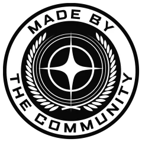

Operations Hub

MusterDeck is free to use and always will be. Supporters keep the servers running and unlock extra tools to run a sharper operation. Pick a level that fits. Change or cancel any time on Patreon.
New to Star Citizen? Enlist with our referral code and you get a head start, at no cost to you.